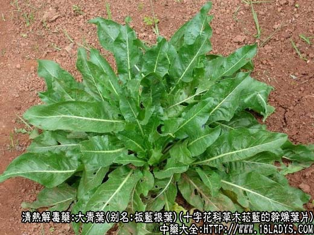
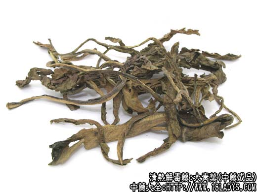
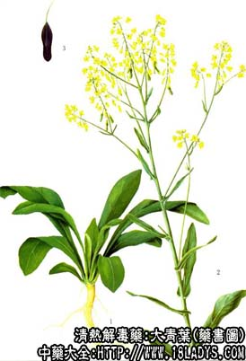

本品为常用中药。始载《名医别录》。市售商品因各地区使用习惯不同，来源于数种不同科植物。京津地区习用品为蓼科植物蓼蓝的带叶枝和十字花科菘蓝的叶片（板蓝根叶）。
别名：蓝靛叶、靛青叶。
1、蓼蓝叶
来源：为蓼科一年生草本植物蓼蓝的干燥带叶茎枝。为人工栽培。
产地：主产于东北、华北等地区。
植物形态：茎圆柱形，高50～90厘米，直径约6毫米左右，中空，有节，节间长3～8厘米。叶互生于节上，卵圆形或椭圆形，全缘，叶缘及叶背面主脉上被黄色短毛，叶柄长约1厘米，基部抱茎，穗状花序顶生或腋生。花呈玫瑰红色。瘦果三棱形，含种子一枚，
性状鉴别：干燥后叶片多皱缩破碎，或脱落，蓝绿色，中脉淡黄棕色。茎黄棕色，略扁缩，有纵棱或沟纹，稍弯曲，节间略膨大有灰黄色膜质叶鞘包于节上。质脆，易折断，断茎中空淡黄色。气微，味淡。
以枝叶齐全，茎黄棕色，叶蓝绿色，无枯枝黄叶者为佳。
2、菘蓝叶
别名：板蓝根叶。
来源：为十字花科二年生草木植物菘蓝的干燥叶片。多为栽培。
产地：主产于华东、华北以及陕西、贵州等地。
植物形态：茎圆柱式，直立高40～90厘米，上部多分枝，通常全体被白粉。主根圆柱形，外表皮灰黄色。基叶丛生，椭圆形，全缘，全滑，有长柄，茎生叶互生，无柄，半抱茎。总状花序顶生。花销，黄色，角果翅果状。
性状鉴别：本品根基生叶，干后多皱缩，成不规则的散乱状或团块状。有的叶片破碎仅剩叶柄。呈暗灰绿色。完整的叶片全长约10～20厘米。叶柄长3～8厘米。叶质易破碎。气微，味淡微酸。
以叶片纯净无杂质，暗灰绿色，较完整者为佳。
主要成分：蓼蓝、大青、菘蓝、菘青、木蓝均含靛甙，水解、氧化后成青黛。含靛蓝5%以上。马蓝含靛甙，在空气中氧化后产生靛蓝。
功效与作用：1、解热：对解退感染性疾患的高热效果较好。
2、抗菌：对金黄色葡萄球菌有较强的抑菌作用。对白喉杆菌有较好的抗菌作用。
炮制：切咀生用。
性味：苦、咸、大寒。
归经：入心、胃经。
功能：清热凉血、解心、胃热毒。
主治：流感、热病发斑、咽喉炎、扁桃腺炎、腮腺炎、流脑、肠炎、菌痢。外敷疮肿毒。
临床应用：1、用于解毒。主要治疗病毒性感染，如流行性腮腺炎、乙型脑炎、病毒性肺炎，也治细菌性感染如流行性脑脊髓膜炎、扁桃体炎。可单味用，或配板蓝根、荆芥，或配生石膏、黄芩等，如乙脑方。
一些出诊性病毒感染在热毒炽盛时，可用大青叶，例如麻疹出疹期高热、毒性症状明显者，也可用大青叶配黄连、黄芩、生石膏等。
重症肝炎有高热神昏、皮下出血者，也可用大青叶配入相应方剂中。
2、用于退热。尤其适应于解退上呼吸道炎、扁桃体炎引起的高热，常配金山沙草，方如青沙场。
用量：常用量6～5g，大剂可用30～60g。
处方举例：
1、乙脑方：大青叶30g、生石膏120g（先煎）、黄芩12g、焦山栀9g、紫草9g、丹皮9g、鲜生地60g、元明粉6g（冲）、黄连3g，水煎服。
注：除以上两种植物全国多数地区作大青叶药用外，还有些地区如上海市用十字花科菘青的叶，作大青叶用。福建、广西、广东、四川用爵床科马蓝的叶作大青叶用。甘肃、江西、湖南、贵州、广东（部分地区）用马鞭草科大青的叶作大青叶用（湖南衡阳用全株）。福建还用豆科假蓝靛叶作大青叶用。以上数种效用均与蓼蓝相同。